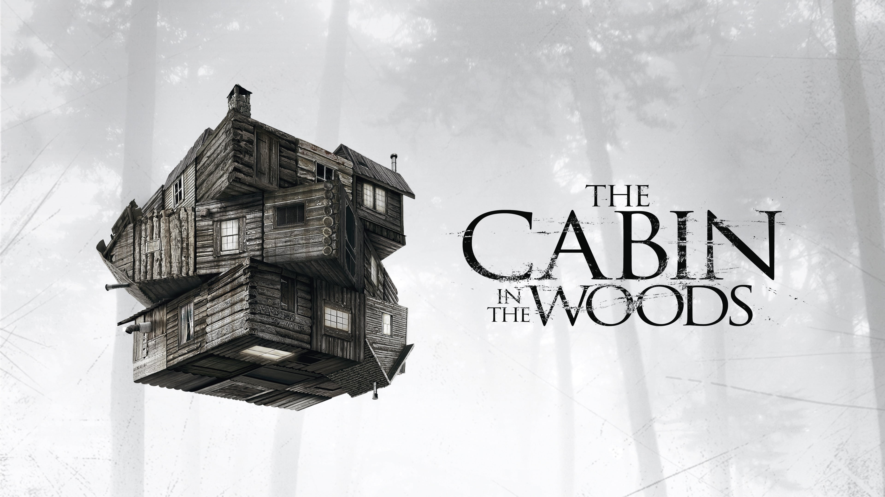

La Cabaña Del Terror Título original:The Cabin in the Woods---------------------------------------------------------------------------------------------------- Año:2011---------------------------------------------------------------------------------------------------- Duración:105 min.---------------------------------------------------------------------------------------------------- País:Estados Unidos Estados Unidos---------------------------------------------------------------------------------------------------- Dirección:Drew Goddard---------------------------------------------------------------------------------------------------- Guion:Joss Whedon, Drew Goddard---------------------------------------------------------------------------------------------------- Música:David Julyan---------------------------------------------------------------------------------------------------- Fotografía:Peter Deming---------------------------------------------------------------------------------------------------- Reparto:Kristen Connolly, Chris Hemsworth, Fran Kranz, Richard Jenkins, Bradley Whitford, Anna Hutchison, Jessie Williams, Amy Acker, Brian J. White, Tim De Zarn, ver 6 más---------------------------------------------------------------------------------------------------- Compañías:Lionsgate, Mutant Enemy. Productor: Joss Whedon---------------------------------------------------------------------------------------------------- Género:Terror. Ciencia ficción. Fantástico | Monstruos. Comedia de terror. Zombis. Slasher. Película de culto---------------------------------------------------------------------------------------------------- Lo más importante que les podemos decir de La Cabaña del Terror es que no es un “churro”. Les decimos esto porque si no saben exactamente en qué se están metiendo, puede parecerlo. Esta película nos recuerda ese terror noventero tipo Scream combinado con el sarcasmo que se deriva de saber que este género es muy exagerado. El guión fue escrito por Joss Whedon, escritor y director de Los Vengadores, y Drew Goddard, quien y había trabajado con Whedon en Buffy la Cazavampiros además de escribir varios capítulos de series como Lost y Alias. Esto es importante porque, si eres fan de Buffy y Angel entenderás perfectamente el humor que ambos escritores le inyectan a este filme de terror. Es sin duda una película para fanáticos, y no queremos contarles mucho al respecto porque la sorpresa que te llevas al descubrir la verdadera intención de la película es gratísima. De qué trataUn grupo de jóvenes deciden pasar sus vacaciones en una cabaña retirada de la sociedad. Lo que no saben es que algo macabro les espera. Juntos deberán descubrir los secretos de esta cabaña en el bosque.Razones para verla1.-No es la típica película de terror. Esperen, esta oración amerita mayúsculas: NO ES LA TÍPICA PELÍCULA DE TERROR. No vayas al cine esperando salir asustada. Ese no es el propósito de esta película. Te vas a reír un buen rato y, si te das cuenta de que absolutamente todo lo que sucede (bueno o aparentemente malo) fue hecho a propósito te la vas a pasar increíble.2.-Si fuiste fanática de Buffy la Cazavampiros, vas a amar esta cinta. Es casi como regresar a la Boca del Infierno. No verás aquí a Sarah Michelle Gellar, pero encontrarás a uno que otro actor recurrente de Whedon en papeles muy similares a los que tenían en sus otras series. 3.-Si te fijas con mucha atención encontrarás una divertida referencia a Firefly, la serie de Culto de Joss Whedon. ¿Se nota que somos fans? 4.-Si fuiste adolescente en los 90 esta película te hará recordar con nostalgia las típicas películas de adolescentes que se meten en problemas, pero el divertido twist es lo que le da un verdadero plus a la cinta. El cinismo de este filme es maravilloso. 5.-Es una película de culto. Si no eres fan de este tipo de cintas posiblemente no la disfrutes tanto como nosotras. Pero si eres de las personas que entendieron el humor de películas como Machete o si simplemente te fascinan los guiones de Joss Whedon te aseguramos que la vas a amar. Aquí les dejamos el tráiler, pero si confían en nosotras les recomendamos no verlo. En nuestra experiencia, es una película que se disfruta más cuando te llega por sorpresa. |